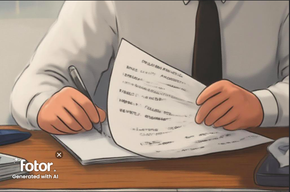
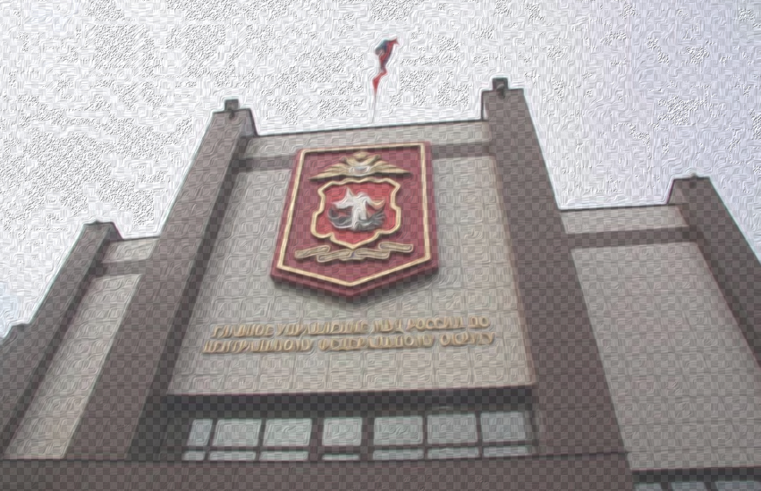

Переезд в Россию по программе «разделения ценностей» — удобный маршрут для иностранцев, разделяющих традиционные российские ценности. По этой программе можно получить РВП (разрешение на временное проживание) на три года без квоты и без экзамена по русскому языку, истории и законодательству России. Также для въезда можно запросить специальную частную визу на три месяца.
Мы поможем определить, подходит ли программа вам и вашей семье, заранее подготовим документы для въезда и поможем последовательно пройти все необходимые процедуры в России.
Сначала индивидуальная стратегия — затем сопровождение по согласованному плану.
Узнайте, подходит ли вам программа
Программа рассчитана на иностранцев, которые разделяют российские традиционные ценности и хотят переехать жить в Россию из страны своего гражданства или постоянного проживания. Перечень государств и территорий определён распоряжением Правительства России № 2560-р. При подаче заявления потребуется указать мотивы переезда в соответствии с Указом 702.
Для предварительного анализа важно узнать ваше гражданство, страну постоянного проживания, сведения о предыдущих поездках в Россию и составе семьи. Гражданство страны из списка само по себе не означает автоматического получения миграционного статуса — нужно собрать необходимые документы и пройти миграционные процедуры. Однако в нашей практике это наиболее предсказуемый способ получить РВП.
Если вы уже законно находитесь в России, вы также можете воспользоваться программой, в том числе при наличии рабочей или туристической визы. Порядок подачи зависит от ваших документов и региона пребывания.
Наш подход: сначала составляем план действий и календарь, затем оформляем визу и покупаем билеты. Так мы последовательно движемся к вашей цели — получению РВП и переезду в Россию.
Получение визы и подготовка документов
По Указу 702 для въезда предусмотрена однократная обыкновенная частная виза на три месяца. Важно правильно подготовить документы, указать предполагаемые даты поездки и запросить подходящий срок. Даты действия визы фиксируются в решении российского консульства.
Самое важное — получить справку об отсутствии судимости ещё до поездки. Для подачи на РВП в России справка действует три месяца с момента выдачи. Документ нужно оформить с апостилем либо другой предусмотренной легализацией. Нотариальный перевод на русский язык вы сделаете уже в России.
Особое внимание — электронным справкам и электронным апостилям. Если в вашей стране справку выдают только в электронном виде, заранее обсудите оформление с миграционным юристом. При подтверждении подлинности таких документов в разных регионах России возникают нюансы, которые лучше решить ещё до выезда.
Подготовьте паспорт, документы о проживании, заявление о мотивах переезда и визовую анкету; проверьте правила того консульства, куда планируете обращаться.

Практический совет: сначала составьте план действий и календарь с учётом даты выдачи справки об отсутствии судимости, записи в консульство и подачи документов в МВД.
Прибытие в Россию: что сделать в первую очередь
Добро пожаловать в Россию!
После пересечения границы нужно спокойно, но оперативно выполнить миграционные формальности, чтобы сохранить возможность получения РВП.
- Получите при въезде и сохраните миграционную карту. Не теряйте её.
- Оформите миграционный учёт по месту пребывания (его часто называют регистрацией). В гостинице уведомление отправляет администрация не позднее следующего рабочего дня; при проживании в квартире общий срок — семь рабочих дней, уведомление обычно подаёт принимающая сторона. Важно не только подать уведомление, но и получить подтверждение его принятия МВД: отрывную часть или электронный документ.
- Подготовьте нотариально удостоверенные переводы иностранных документов.
- Выберите регион, где действительно планируете проживать и подавать документы.
- При необходимости займитесь СНИЛС, Госуслугами, мобильной связью и банком: это полезные бытовые шаги, но не универсальные условия получения РВП.

Медицинские документы, переводы и заявление
На этом этапе готовим заявление о выдаче РВП, проверяем иностранные документы и переводы, проходим медицинское освидетельствование, оформляем необходимые идентификационные номера и выполняем другие процедуры.
Медицинское освидетельствование для РВП нужно проходить в России, только в уполномоченных медицинских организациях. При въезде по специальной процедуре Указа 702 (при подаче через консульство) медицинские документы необходимо представить в МВД в течение 30 суток со дня въезда.
В выбранном регионе нужно узнать адрес медицинского центра, уточнить график работы, пройти обязательную дактилоскопию и фотографирование. СНИЛС, ИНН и другие документы для дальнейшей жизни оформляем параллельно.

Мы проверяем документы на соответствие требованиям до обращения в МВД: просроченные справки, неточные переводы и ошибки в заявлении часто стоят заявителю времени и могут снизить вероятность положительного решения.
Обращение за РВП в МВД России
Заявление на РВП подаётся в территориальное подразделение МВД в регионе, который вы выбрали для проживания. Подача требует полного комплекта документов и соблюдения миграционных правил. Мы сопровождаем заявителя и взаимодействуем с должностными лицами.
Для всех регионов России федеральное законодательство едино, но как показывает наша практика – существуют региональные особенности в отношении некоторых важных нюансов.
Подтверждение принятия заявления в МВД — один из самых важных документов. Пункт 2 статьи 5 закона № 115-ФЗ позволяет законно дожидаться решения в России после окончания первоначальной визы, если МВД приняло заявление и необходимые документы на РВП. Такое продолжение законного пребывания нужно надлежащим образом оформить и получить подтверждающие документы. В разных регионах и для разных категорий виз возможны особенности оформления.
Срок рассмотрения заявления определён законом; для обычной визовой процедуры действует срок до четырёх месяцев. На практике весь путь от подготовки документов и подачи до получения решения может занимать от двух до шести месяцев. Поэтому календарь переезда лучше составить заранее.

После получения РВП: что меняется
При положительном решении и оформлении РВП вы получаете статус временно проживающего иностранного гражданина. Обычный срок РВП — три года. Вы получаете доступ к общему с россиянами медицинскому страхованию (ОМС), можете работать или учиться, заниматься бизнесом, покупать недвижимость и инвестировать.
Это позволяет планировать жизнь, работу и развитие бизнеса в России в пределах условий вашего статуса, но сохраняет ряд обязанностей.
«К нам обращаются разные люди: семьи с детьми и те, кто нашёл свою любовь в России; предприниматели и будущие фермеры; высококвалифицированные специалисты и студенты; те, кому комфортно жить и работать в России; и те, кто просто решил связать свою жизнь с Россией и узнать её получше. Я хотел описать программу понятным языком: показать её возможности и предупредить о действиях, которые могут осложнить переезд. Я могу подготовить индивидуальную миграционную стратегию для вас и пройти согласованные юридические этапы вместе с вами».
Лев Втюрин
Основатель SalutRussie · более 20 лет юридической практики
Частые вопросы о переезде по Указу 702
Планируете переезд в Россию?
Опишите ваше гражданство, страну проживания, состав семьи и предполагаемую дату переезда. Мы определим возможный правовой маршрут, документы и основные риски до начала затрат.
Получить консультацию по Указу 702 →Правовая основа и подробная инструкция
- Указ Президента РФ от 19.08.2024 702.
- Распоряжение Правительства РФ от 17.09.2024 № 2560-р — перечень государств.
- Федеральный закон от 25.07.2002 № 115-ФЗ «О правовом положении иностранных граждан в Российской Федерации».
- Приказы МВД России, регулирующие порядок подачи и рассмотрения документов на РВП.
Для подробного юридического анализа читайте экспертную статью «РВП по Указу 702: условия, документы и правовые риски». Здесь изложен практический путь переезда и юридического сопровождения.